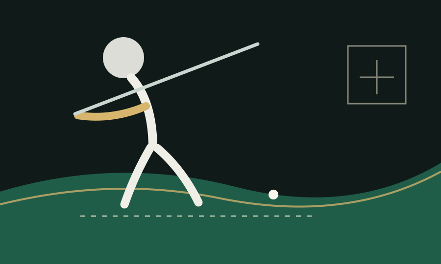

Sesión
Sin vídeoCarga un vídeo para empezar.
Capture score
0Automático cuando se carga un vídeo; editable.
Guía de encuadre
Úsala para alinear pies, bola y cuerpo. No mide: ayuda a grabar y comparar siempre igual.
Métricas revisables
Auto + manual
Listo para analizar
Sube un vídeo y deja que la app encuentre las fases
Frame 0
00:00.00